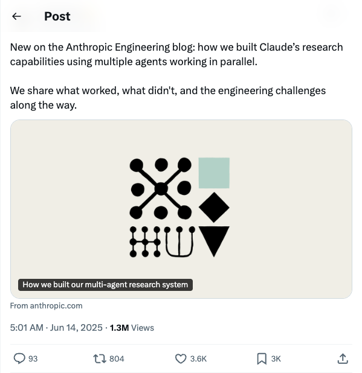

AnthropicAI_揭秘Claude多智能体研究系统构建
发布时间: 2025-06-13T21:01:19.000Z Anthropic在其工程博客上发布新文章，详细阐述了如何通过并行协作的多个智能体构建Claude的研发能力。文章分享了该多智能体研究系统在开发过程中的成功经验、遇到的挑战以及工程难题，为AI系统设计与优化提供了宝贵见解。
2025-06-13
Anthropic在其工程博客上发布新文章，详细阐述了如何通过并行协作的多个智能体构建Claude的研发能力。文章分享了该多智能体研究系统在开发过程中的成功经验、遇到的挑战以及工程难题，为AI系统设计与优化提供了宝贵见解。

推文探讨了大型语言模型（LLM）通过强化学习（RL）实现自我编辑的可能性。Jyo Pari介绍了一个名为SEAL的框架，该框架允许LLM生成自身的训练数据（自编辑），并根据新输入更新其权重。这种自编辑能力通过RL学习，以模型下游性能作为奖励信号，预示着LLM自我改进的新范式。
TuringPost介绍了强化元思维智能体（ReMA），该框架结合元学习与强化学习，显著提升大语言模型（LLM）在多智能体协作中的效能。ReMA将问题解决分为元思维（规划）和推理（执行）两部分，通过多智能体元思维推理过程（MAMRP）中的高低层智能体协同工作。高层智能体负责制定元计划，低层智能体执行推理，并可动态调整。ReMA在数学和LLM-as-a-Judge基准测试中均取得了显著性能提升。

Jerry Liu宣布LlamaParse推出“用例预设”功能，这是一系列专业的解析代理，能将不同文档类型（如表单、技术文档、发票）渲染成预定义格式。例如，表单可输出为结构化2D表格，技术文档可输出XML，发票可输出行项目。此外，LlamaParse还更新了文档页面，详细介绍了通用预设（快速、平衡、高级）和用例预设。
知名技术人士Vipul Ved Prakash大胆预言，在未来12个月内，传统的手写代码模式将走向终结。这一观点暗示了人工智能在代码生成领域的飞速发展，预示着AI辅助编程乃至全自动代码生成将成为主流，彻底改变软件开发的面貌，引发业界对未来编程范式的深刻思考和讨论。

Google DeepMind宣布与导演达伦·阿伦诺夫斯基创立的Primordial Soup合作的首部电影《ANCESTRA》将在翠贝卡电影节首映。该片由Eliza McNitt执导，结合了传统电影制作技术与DeepMind的生成式视频模型Veo，展示了AI在电影艺术创作中的应用潜力。

Milvus 2.6正式开源，作为其2025年产品路线图重要里程碑，旨在提供更高效、强大、经济的向量数据库解决方案。新版本在降本增效方面，通过引入RaBitQ 1 bit量化技术，实现内存大幅缩减72%并显著提升QPS。搜索能力方面，增强Analyzer/Tokenizer功能，新增Phrase Match和Decay Function时间衰减重排序，提升混合搜索精度与时效性。架构优化上，引入冷热分层存储、Streaming Service实现实时数据处理，并支持100k Collection等，显著提升系统稳定性、可扩展性和性能。Milvus 2.6致力于解决AI时代数据检索的效率与稳定性问题，为大规模AI应用提供坚实基础。

科大讯飞在最新发布会上展示了智能交互的新范式，标志着人机交互从基础命令式迈向深度智能协作时代。通过AIUI平台升级和星火交互大模型赋能，讯飞实现了全双工拟人对话、情绪感知与共情、类人记忆系统及快速响应，大幅提升了用户体验，尤其在儿童场景交互频次飙升。此外，讯飞发布机器人超脑平台，融合星火大模型，实现多模态感知与智能行动，并通过智能语音背包赋能存量机器人。这不仅是产品功能升级，更是以AI交互为中枢，重塑硬件产业生态，推动人机关系从“命令-执行”向“协作共事”转变，加速构建更智慧的智能世界。

加州大学等团队提出的SafeKey框架，针对大型推理模型（LRMs）在面对“越狱”攻击时泛化能力不足的问题，通过揭示“关键句”和“沉睡的安全信号”两大发现，创新性地引入“双通路安全头”和“查询遮蔽建模”机制。该框架旨在强化模型在生成关键句时的“安全顿悟时刻”，使其在不影响核心能力的前提下，显著提升安全稳健性。实验结果显示，SafeKey能有效降低9.6%的危险率，为LRMs的安全部署提供了高效且通用的解决方案。
东南大学等机构联合发布KRIS-Bench，首次从事实性、概念性、程序性知识类型视角，系统化评测图像编辑模型的推理能力。该基准细化出22种编辑任务，并借助多模态大模型与人工校准进行输出打分。评测结果显示，现有图像编辑模型在“程序性推理”方面表现不佳。研究旨在推动模型从单纯的像素操作向具备人类认知能力的“视觉智者”发展，使其能理解图像编辑背后的物理、化学及因果原理。

DeepSeek工程师俞星凯近日开源了轻量级大模型推理引擎Nano-vLLM，该项目仅用1200行代码便实现了与高性能vLLM相近的吞吐量表现。Nano-vLLM旨在提供一个易读、高效的替代方案，其核心亮点包括快速离线推理、简洁的代码库以及Prefix缓存、Torch编译、CUDA计算图等优化功能。基准测试显示，Nano-vLLM在RTX 4070上使用Qwen3-0.6B模型时，性能与原版vLLM不相上下，为大模型推理优化提供了新的思路和工具。
Unstructured Data Meetup日本场将于7月5日在东京AWS办公室举行，这是一场由向量数据库领先者Zilliz发起的、面向开发者的非结构化数据与GenAI技术分享盛会。活动旨在汇聚AI工程师、数据科学家等专业人士，共同探讨向量数据库、大模型、AI应用及大数据等前沿技术。届时，Zilliz将介绍其向量数据库Milvus及其云服务，SmartNews将分享Milvus在搜索、推荐和内容理解中的应用经验，Mercari则会深入解析AI与大语言模型在其检索系统中的实践，包括数据标注、查询扩展和嵌入技术应用。此次聚会将促进非结构化数据和生成式AI领域的最新进展交流。
该项目是一个AI驱动的对冲基金概念验证，旨在探索利用人工智能进行交易决策。系统采用多智能体协作模式，包括估值、情绪、基本面、技术分析及风险管理等专业代理，并模拟了多位著名投资大师的策略。项目提供Poetry和Docker部署方式，支持LLM集成和回测功能，主要用于教育和研究目的，不涉及真实交易。

DeepEval是一个开源的大语言模型（LLM）评估框架，旨在简化LLM系统测试与质量保障。它集成了G-Eval、RAGAS等前沿评估指标，支持幻觉、答案相关性、上下文召回等多种维度，并可在本地运行。该框架类似于LLM领域的Pytest，能帮助开发者评估RAG管道、聊天机器人和AI智能体，优化模型与提示词，并无缝集成到CI/CD环境，确保LLM应用性能与可靠性。
该GitHub仓库提供了一个关于检索增强生成（RAG）技术的实践性指南，通过不依赖LangChain等框架、纯Python实现的方式，深入剖析并演示了20多种先进RAG技术，包括语义分块、重排序、图RAG、多模态RAG及纠错RAG等。项目旨在提供可读、可修改且具有教育意义的代码，帮助开发者从基础层面理解RAG工作原理，并支持处理大数据集与知识图谱。它为构建高效、可解释的RAG系统提供了宝贵的资源。
本项目是面向国内初学者的开源大模型教程，基于Linux平台，提供从环境配置、本地部署到高效微调的全流程指导。它简化了开源大模型的部署和应用，涵盖LLaMA、ChatGLM、InternLM等主流模型，并支持命令行调用、在线Demo部署及LangChain集成。教程旨在帮助学生和研究者更好地使用开源大模型，促进其在学习和实践中的普及，赋能个性化大模型构建。
YouTube Transcript API是一个Python库，旨在高效获取YouTube视频的字幕和转录文本，包括自动生成字幕。该API无需依赖无头浏览器，支持字幕翻译，并提供灵活的API接口和命令行工具。它能处理IP封禁问题，通过代理配置确保服务稳定性，并支持多种输出格式。该项目为视频内容分析、多语言处理及自动化数据提取提供了便捷的解决方案。

该GitHub仓库提供了一个名为“AI Agents for Beginners”的课程，包含11节课，旨在教授构建AI智能体的基础知识。课程内容涵盖AI智能体概念、代理框架探索、智能体设计模式（如工具使用、RAG、规划、多智能体、元认知）以及生产环境中的智能体应用。课程提供Python代码示例，支持Azure AI Foundry和GitHub模型目录，并利用Microsoft的Azure AI Agent Service、Semantic Kernel和AutoGen等框架和服务。该课程支持多语言，适合初学者系统学习AI智能体开发。

尽管基于推理的大型语言模型（LLMs）在数学和编程领域表现出色，但它们在知识密集型医学问答方面的能力仍未得到充分探索。为解决此问题，我们引入了ReasonMed，这是目前最大的医学推理数据集，包含从各种LLM生成的170万条初始推理路径中提炼出的37万个高质量示例。ReasonMed通过多智能体验证和精炼过程构建，我们设计了一个错误精炼器，通过识别和纠正验证器标记的易错步骤来增强推理路径。利用ReasonMed，我们系统地研究了训练医学推理模型的最佳实践，发现将详细的思维链（CoT）推理与简洁的答案摘要相结合，能产生最有效的微调策略。基于此策略，我们训练了ReasonMed-7B，它为10B以下模型树立了新基准，性能超越先前最佳模型4.17%，甚至在PubMedQA上超越LLaMA3.1-70B达4.60%。

我们推出了Magistral，这是Mistral的首个推理模型，也是我们自研的可扩展强化学习（RL）管线。我们没有依赖现有的实现和从先前模型中提炼出的RL轨迹，而是采用了一种自下而上的方法，完全依赖于我们自己的模型和基础设施。值得注意的是，我们展示了一个技术栈，使我们能够探索大型语言模型（LLMs）纯强化学习训练的极限，提出了一种简单的方法来强制模型的推理语言，并表明仅在文本数据上进行RL训练仍能保持初始检查点的大部分能力。我们发现，在文本上进行的RL训练能够保持或提升多模态理解、指令遵循和函数调用能力。我们展示了Magistral Medium，它是在Mistral Medium 3的基础上纯粹通过RL训练用于推理的模型；我们还开源了Magistral Small（Apache 2.0），其中进一步包含了来自Magistral Medium的冷启动数据。

尽管视频生成模型取得了快速进展，但生成跨越多个场景和角色的连贯叙事视频仍然具有挑战性。当前方法通常将预生成的关键帧僵化地转换为固定长度的片段，导致叙事脱节和节奏问题。此外，视频生成模型固有的不稳定性意味着即使一个低质量的片段也可能显著降低整个输出动画的逻辑连贯性和视觉连续性。为了克服这些障碍，我们引入了AniMaker，一个多智能体框架，能够实现高效的多候选片段生成和叙事感知片段选择，从而仅通过文本输入即可创建全局一致且故事连贯的动画。该框架围绕专业智能体构建，包括用于故事板生成的导演智能体、用于视频片段生成的摄影智能体、用于评估的评审智能体以及用于编辑和配音的后期制作智能体。AniMaker方法的核心是两个关键技术组件：摄影智能体中的MCTS-Gen，这是一种受蒙特卡洛树搜索（MCTS）启发的高效策略，可智能地探索候选空间以生成高潜力片段，同时优化资源使用；以及评审智能体中的AniEval，这是第一个专门为多镜头动画评估设计的框架，它通过考虑每个片段与其前序和后续片段的上下文关系，评估故事层面的连贯性、动作完成度以及动画特定特征等关键方面。实验表明，AniMaker在VBench和我们提出的AniEval框架等流行指标衡量下，实现了卓越的质量，同时显著提高了多候选生成的效率，使AI生成的叙事动画更接近生产标准。

我们提出了VRBench，这是首个专为评估大型模型多步推理能力而设计的长叙事视频基准，旨在解决现有评估中忽视时间推理和程序有效性的局限。它包含1,010个长视频（平均时长1.6小时），以及9,468个人工标注的多步问答对和30,292个带有时间戳的推理步骤。这些视频通过多阶段过滤过程进行整理，包括专家间评审以优先考虑情节连贯性。我们开发了一个人机协作框架，用于生成连贯的推理链，每个推理链都需要多个基于时间的基础步骤，涵盖七种类型（例如，事件归因、隐式推理）。VRBench设计了一个多阶段评估流程，从结果和过程两个层面评估模型。除了用于最终结果的多项选择题外，我们还提出了一种由LLM引导的进度级评分指标，以全面评估推理链的质量。通过对VRBench上12个LLM和16个VLM进行广泛评估，我们进行了深入分析，并提供了有价值的见解，推动了多步推理领域的发展。

我们提出了 Ming-Omni，一个统一的多模态模型，能够处理图像、文本、音频和视频，同时在语音和图像生成方面表现出强大的能力。Ming-Omni 采用专用的编码器从不同模态中提取 token，这些 token 随后由 Ling 处理，Ling 是一个配备了新提出的模态特定路由器的 MoE（混合专家）架构。这种设计使得单个模型能够在统一框架内高效处理和融合多模态输入，从而促进多样化任务，而无需单独的模型、特定任务的微调或结构重新设计。重要的是，Ming-Omni 通过支持音频和图像生成，超越了传统的通用多模态模型。这通过集成用于自然语音的高级音频解码器和用于高质量图像生成的 Ming-Lite-Uni 实现，这也使得该模型能够进行上下文感知聊天、执行文本到语音转换以及进行多功能图像编辑。我们的实验结果表明，Ming-Omni 为跨所有模态的统一感知和生成提供了一个强大的解决方案。值得注意的是，我们提出的 Ming-Omni 是我们所知的第一个在模态支持方面与 GPT-4o 匹敌的开源模型，我们发布了所有代码和模型权重，以鼓励社区的进一步研究和开发。

近期，基于多模态大语言模型（MLLMs）的智能体在各个领域取得了显著进展。然而，在Minecraft等开放世界环境中构建一个具备感知、规划、行动、接地和反思能力的通用智能体仍面临挑战：领域特定数据不足、异构任务间的干扰以及开放世界设置中的视觉多样性。本文通过三项关键贡献来解决这些挑战。1）我们提出了一种知识增强的数据生成管道，为智能体开发提供可扩展的高质量训练数据。2）为了减轻异构任务间的干扰，我们引入了一种具有任务级路由的专家混合（MoE）架构。3）我们开发了一种多模态推理增强强化学习方法，以增强智能体在Minecraft中应对视觉多样性的推理能力。基于这些创新，我们提出了Optimus-3，一个用于Minecraft的通用智能体。广泛的实验结果表明，Optimus-3在Minecraft环境中的广泛任务上超越了通用多模态大语言模型和现有最先进的智能体。